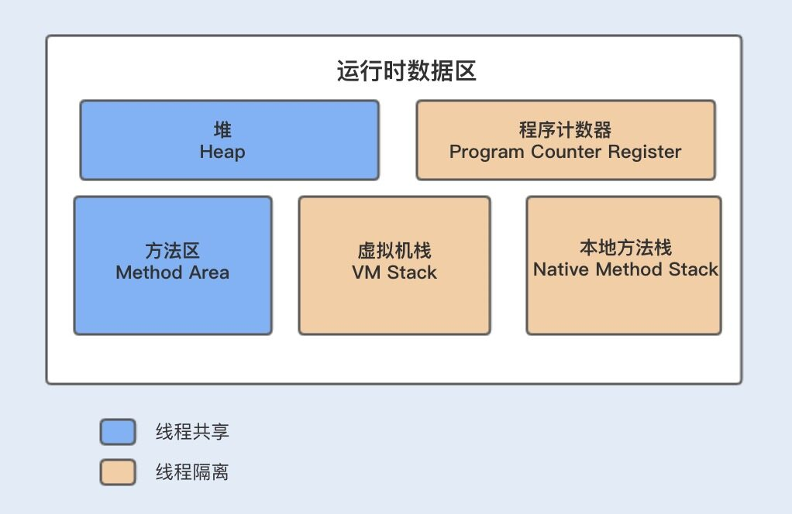
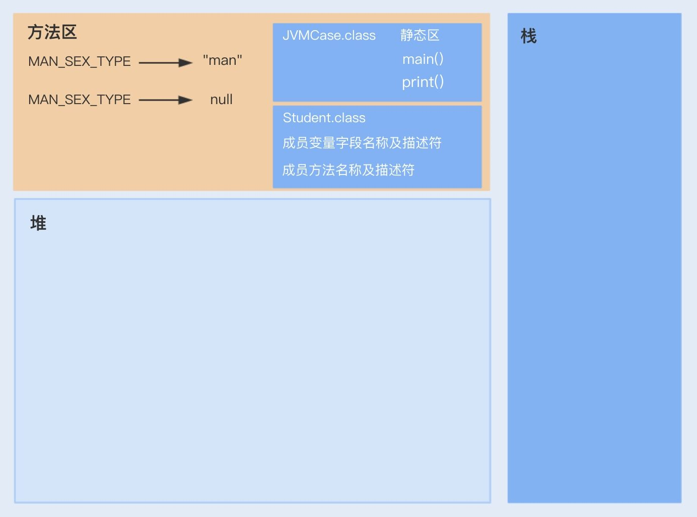
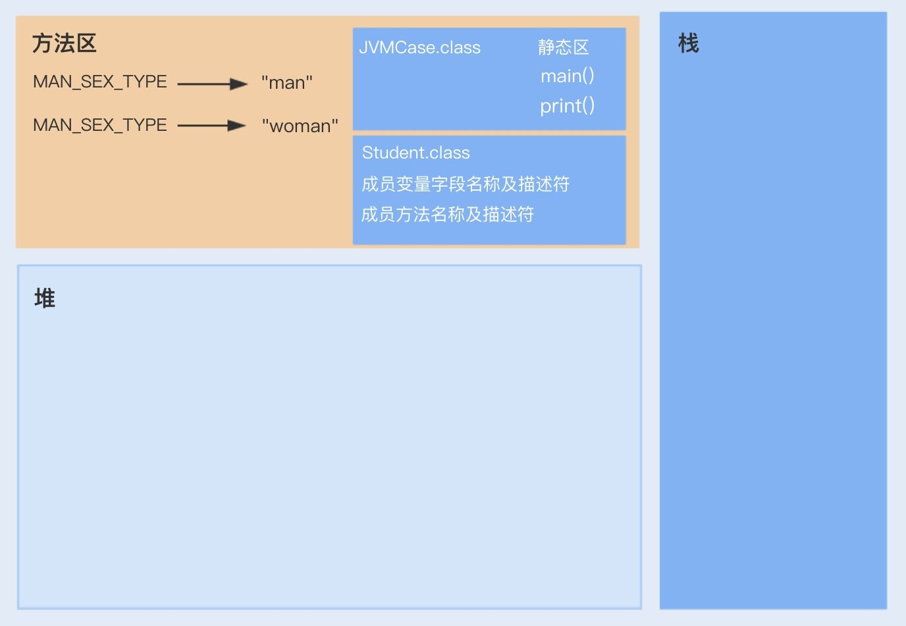
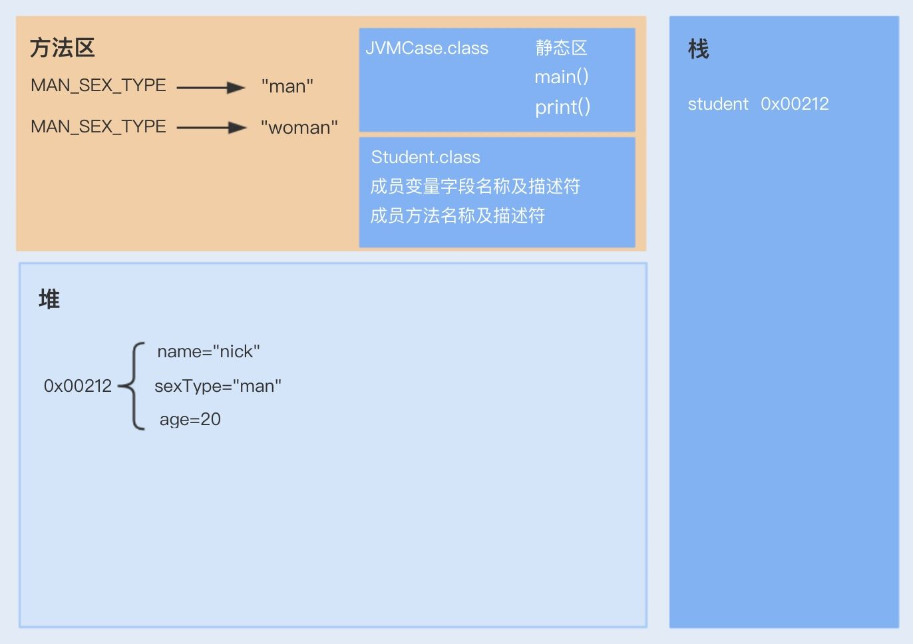
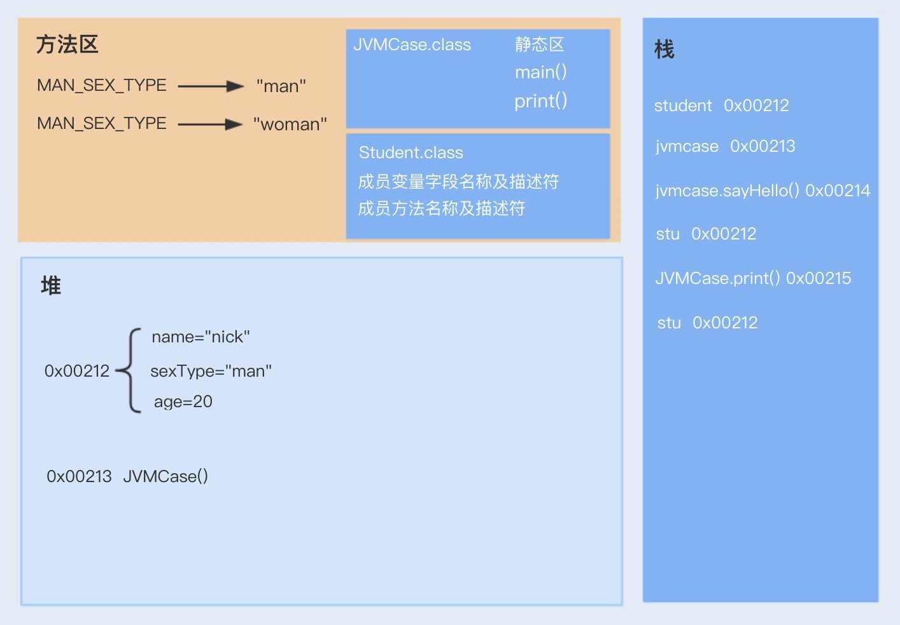

- 00 开篇词你为什么需要学习并发编程？.md.html
- 01 如何制定性能调优标准？.md.html
- 02 如何制定性能调优策略？.md.html
- 03 字符串性能优化不容小觑，百M内存轻松存储几十G数据.md.html
- 04 慎重使用正则表达式.md.html
- 05 ArrayList还是LinkedList？使用不当性能差千倍.md.html
- 06 Stream如何提高遍历集合效率？.md.html
- 07 深入浅出HashMap的设计与优化.md.html
- 08 网络通信优化之IO模型：如何解决高并发下IO瓶颈？.md.html
- 09 网络通信优化之序列化：避免使用Java序列化.md.html
- 10 网络通信优化之通信协议：如何优化RPC网络通信？.md.html
- 11 答疑课堂：深入了解NIO的优化实现原理.md.html
- 12 多线程之锁优化（上）：深入了解Synchronized同步锁的优化方法.md.html
- 13 多线程之锁优化（中）：深入了解Lock同步锁的优化方法.md.html
- 14 多线程之锁优化（下）：使用乐观锁优化并行操作.md.html
- 15 多线程调优（上）：哪些操作导致了上下文切换？.md.html
- 16 多线程调优（下）：如何优化多线程上下文切换？.md.html
- 17 并发容器的使用：识别不同场景下最优容器.md.html
- 18 如何设置线程池大小？.md.html
- 19 如何用协程来优化多线程业务？.md.html
- 20 磨刀不误砍柴工：欲知JVM调优先了解JVM内存模型.md.html
- 21 深入JVM即时编译器JIT，优化Java编译.md.html
- 22 如何优化垃圾回收机制？.md.html
- 23 如何优化JVM内存分配？.md.html
- 24 内存持续上升，我该如何排查问题？.md.html
- 25 答疑课堂：模块四热点问题解答.md.html
- 26 单例模式：如何创建单一对象优化系统性能？.md.html
- 27 原型模式与享元模式：提升系统性能的利器.md.html
- 28 如何使用设计模式优化并发编程？.md.html
- 29 生产者消费者模式：电商库存设计优化.md.html
- 30 装饰器模式：如何优化电商系统中复杂的商品价格策略？.md.html
- 31 答疑课堂：模块五思考题集锦.md.html
- 32 MySQL调优之SQL语句：如何写出高性能SQL语句？.md.html
- 33 MySQL调优之事务：高并发场景下的数据库事务调优.md.html
- 34 MySQL调优之索引：索引的失效与优化.md.html
- 35 记一次线上SQL死锁事故：如何避免死锁？.md.html
- 36 什么时候需要分表分库？.md.html
- 37 电商系统表设计优化案例分析.md.html
- 38 数据库参数设置优化，失之毫厘差之千里.md.html
- 39 答疑课堂：MySQL中InnoDB的知识点串讲.md.html
- 41 如何设计更优的分布式锁？.md.html
- 42 电商系统的分布式事务调优.md.html
- 43 如何使用缓存优化系统性能？.md.html
- 44 记一次双十一抢购性能瓶颈调优.md.html
- 加餐 什么是数据的强、弱一致性？.md.html
- 加餐 推荐几款常用的性能测试工具.md.html
- 答疑课堂：模块三热点问题解答.md.html
- 结束语 栉风沐雨，砥砺前行！.md.html
20 磨刀不误砍柴工：欲知JVM调优先了解JVM内存模型
你好，我是刘超。
从今天开始，我将和你一起探讨 Java 虚拟机（JVM）的性能调优。JVM 算是面试中的高频问题了，通常情况下总会有人问到：请你讲解下 JVM 的内存模型，JVM 的性能调优做过吗？
为什么 JVM 在 Java 中如此重要？
首先你应该知道，运行一个 Java 应用程序，我们必须要先安装 JDK 或者 JRE 包。这是因为 Java 应用在编译后会变成字节码，然后通过字节码运行在 JVM 中，而 JVM 是 JRE 的核心组成部分。
JVM 不仅承担了 Java 字节码的分析（JIT compiler）和执行（Runtime），同时也内置了自动内存分配管理机制。这个机制可以大大降低手动分配回收机制可能带来的内存泄露和内存溢出风险，使 Java 开发人员不需要关注每个对象的内存分配以及回收，从而更专注于业务本身。
从了解内存模型开始
JVM 自动内存分配管理机制的好处很多，但实则是把双刃剑。这个机制在提升 Java 开发效率的同时，也容易使 Java 开发人员过度依赖于自动化，弱化对内存的管理能力，这样系统就很容易发生 JVM 的堆内存异常，垃圾回收（GC）的方式不合适以及 GC 次数过于频繁等问题，这些都将直接影响到应用服务的性能。
因此，要进行 JVM 层面的调优，就需要深入了解 JVM 内存分配和回收原理，这样在遇到问题时，我们才能通过日志分析快速地定位问题；也能在系统遇到性能瓶颈时，通过分析 JVM 调优来优化系统性能。这也是整个模块四的重点内容，今天我们就从 JVM 的内存模型学起，为后续的学习打下一个坚实的基础。
JVM 内存模型的具体设计
我们先通过一张 JVM 内存模型图，来熟悉下其具体设计。在 Java 中，JVM 内存模型主要分为堆、程序计数器、方法区、虚拟机栈和本地方法栈。

JVM 的 5 个分区具体是怎么实现的呢？我们一一分析。
1. 堆（Heap）
堆是 JVM 内存中最大的一块内存空间，该内存被所有线程共享，几乎所有对象和数组都被分配到了堆内存中。堆被划分为新生代和老年代，新生代又被进一步划分为 Eden 和 Survivor 区，最后 Survivor 由 From Survivor 和 To Survivor 组成。
在 Java6 版本中，永久代在非堆内存区；到了 Java7 版本，永久代的静态变量和运行时常量池被合并到了堆中；而到了 Java8，永久代被元空间取代了。 结构如下图所示：

2. 程序计数器（Program Counter Register）
程序计数器是一块很小的内存空间，主要用来记录各个线程执行的字节码的地址，例如，分支、循环、跳转、异常、线程恢复等都依赖于计数器。
由于 Java 是多线程语言，当执行的线程数量超过 CPU 数量时，线程之间会根据时间片轮询争夺 CPU 资源。如果一个线程的时间片用完了，或者是其它原因导致这个线程的 CPU 资源被提前抢夺，那么这个退出的线程就需要单独的一个程序计数器，来记录下一条运行的指令。
3. 方法区（Method Area）
很多开发者都习惯将方法区称为“永久代”，其实这两者并不是等价的。
HotSpot 虚拟机使用永久代来实现方法区，但在其它虚拟机中，例如，Oracle 的 JRockit、IBM 的 J9 就不存在永久代一说。因此，方法区只是 JVM 中规范的一部分，可以说，在 HotSpot 虚拟机中，设计人员使用了永久代来实现了 JVM 规范的方法区。
方法区主要是用来存放已被虚拟机加载的类相关信息，包括类信息、运行时常量池、字符串常量池。类信息又包括了类的版本、字段、方法、接口和父类等信息。
JVM 在执行某个类的时候，必须经过加载、连接、初始化，而连接又包括验证、准备、解析三个阶段。在加载类的时候，JVM 会先加载 class 文件，而在 class 文件中除了有类的版本、字段、方法和接口等描述信息外，还有一项信息是常量池 (Constant Pool Table)，用于存放编译期间生成的各种字面量和符号引用。
字面量包括字符串（String a=“b”）、基本类型的常量（final 修饰的变量），符号引用则包括类和方法的全限定名（例如 String 这个类，它的全限定名就是 Java/lang/String）、字段的名称和描述符以及方法的名称和描述符。
而当类加载到内存中后，JVM 就会将 class 文件常量池中的内容存放到运行时的常量池中；在解析阶段，JVM 会把符号引用替换为直接引用（对象的索引值）。
例如，类中的一个字符串常量在 class 文件中时，存放在 class 文件常量池中的；在 JVM 加载完类之后，JVM 会将这个字符串常量放到运行时常量池中，并在解析阶段，指定该字符串对象的索引值。运行时常量池是全局共享的，多个类共用一个运行时常量池，class 文件中常量池多个相同的字符串在运行时常量池只会存在一份。
方法区与堆空间类似，也是一个共享内存区，所以方法区是线程共享的。假如两个线程都试图访问方法区中的同一个类信息，而这个类还没有装入 JVM，那么此时就只允许一个线程去加载它，另一个线程必须等待。
在 HotSpot 虚拟机、Java7 版本中已经将永久代的静态变量和运行时常量池转移到了堆中，其余部分则存储在 JVM 的非堆内存中，而 Java8 版本已经将方法区中实现的永久代去掉了，并用元空间（class metadata）代替了之前的永久代，并且元空间的存储位置是本地内存。之前永久代的类的元数据存储在了元空间，永久代的静态变量（class static variables）以及运行时常量池（runtime constant pool）则跟 Java7 一样，转移到了堆中。
那你可能又有疑问了，Java8 为什么使用元空间替代永久代，这样做有什么好处呢？
官方给出的解释是：
- 移除永久代是为了融合 HotSpot JVM 与 JRockit VM 而做出的努力，因为 JRockit 没有永久代，所以不需要配置永久代。
- 永久代内存经常不够用或发生内存溢出，爆出异常 java.lang.OutOfMemoryError: PermGen。这是因为在 JDK1.7 版本中，指定的 PermGen 区大小为 8M，由于 PermGen 中类的元数据信息在每次 FullGC 的时候都可能被收集，回收率都偏低，成绩很难令人满意；还有，为 PermGen 分配多大的空间很难确定，PermSize 的大小依赖于很多因素，比如，JVM 加载的 class 总数、常量池的大小和方法的大小等。
4. 虚拟机栈（VM stack）
Java 虚拟机栈是线程私有的内存空间，它和 Java 线程一起创建。当创建一个线程时，会在虚拟机栈中申请一个线程栈，用来保存方法的局部变量、操作数栈、动态链接方法和返回地址等信息，并参与方法的调用和返回。每一个方法的调用都伴随着栈帧的入栈操作，方法的返回则是栈帧的出栈操作。
5. 本地方法栈（Native Method Stack）
本地方法栈跟 Java 虚拟机栈的功能类似，Java 虚拟机栈用于管理 Java 函数的调用，而本地方法栈则用于管理本地方法的调用。但本地方法并不是用 Java 实现的，而是由 C 语言实现的。
JVM 的运行原理
看到这里，相信你对 JVM 内存模型已经有个充分的了解了。接下来，我们通过一个案例来了解下代码和对象是如何分配存储的，Java 代码又是如何在 JVM 中运行的。
public class JVMCase {
// 常量
public final static String MAN_SEX_TYPE = "man";
// 静态变量
public static String WOMAN_SEX_TYPE = "woman";
public static void main(String[] args) {
Student stu = new Student();
stu.setName("nick");
stu.setSexType(MAN_SEX_TYPE);
stu.setAge(20);
JVMCase jvmcase = new JVMCase();
// 调用静态方法
print(stu);
// 调用非静态方法
jvmcase.sayHello(stu);
}
// 常规静态方法
public static void print(Student stu) {
System.out.println("name: " + stu.getName() + "; sex:" + stu.getSexType() + "; age:" + stu.getAge());
}
// 非静态方法
public void sayHello(Student stu) {
System.out.println(stu.getName() + "say: hello");
}
}
class Student{
String name;
String sexType;
int age;
public String getName() {
return name;
}
public void setName(String name) {
this.name = name;
}
public String getSexType() {
return sexType;
}
public void setSexType(String sexType) {
this.sexType = sexType;
}
public int getAge() {
return age;
}
public void setAge(int age) {
this.age = age;
}
}
当我们通过 Java 运行以上代码时，JVM 的整个处理过程如下：
-
JVM 向操作系统申请内存，JVM 第一步就是通过配置参数或者默认配置参数向操作系统申请内存空间，根据内存大小找到具体的内存分配表，然后把内存段的起始地址和终止地址分配给 JVM，接下来 JVM 就进行内部分配。
-
JVM 获得内存空间后，会根据配置参数分配堆、栈以及方法区的内存大小。
-
class 文件加载、验证、准备以及解析，其中准备阶段会为类的静态变量分配内存，初始化为系统的初始值（这部分我在第 21 讲还会详细介绍）。

- 完成上一个步骤后，将会进行最后一个初始化阶段。在这个阶段中，JVM 首先会执行构造器
方法，编译器会在.java 文件被编译成.class 文件时，收集所有类的初始化代码，包括静态变量赋值语句、静态代码块、静态方法，收集在一起成为 () 方法。

- 执行方法。启动 main 线程，执行 main 方法，开始执行第一行代码。此时堆内存中会创建一个 student 对象，对象引用 student 就存放在栈中。

- 此时再次创建一个 JVMCase 对象，调用 sayHello 非静态方法，sayHello 方法属于对象 JVMCase，此时 sayHello 方法入栈，并通过栈中的 student 引用调用堆中的 Student 对象；之后，调用静态方法 print，print 静态方法属于 JVMCase 类，是从静态方法中获取，之后放入到栈中，也是通过 student 引用调用堆中的 student 对象。

了解完实际代码在 JVM 中分配的内存空间以及运行原理，相信你会更加清楚内存模型中各个区域的职责分工。
总结
这讲我们主要深入学习了最基础的内存模型设计，了解其各个分区的作用及实现原理。
如今，JVM 在很大程度上减轻了 Java 开发人员投入到对象生命周期的管理精力。在使用对象的时候，JVM 会自动分配内存给对象，在不使用的时候，垃圾回收器会自动回收对象，释放占用的内存。
但在某些情况下，正常的生命周期不是最优的选择，有些对象按照 JVM 默认的方式，创建成本会很高。比如，我在[第 03 讲]讲到的 String 对象，在特定的场景使用 String.intern 可以很大程度地节约内存成本。我们可以使用不同的引用类型，改变一个对象的正常生命周期，从而提高 JVM 的回收效率，这也是 JVM 性能调优的一种方式。
思考题
这讲我只提到了堆内存中对象分配内存空间的过程，那如果有一个类中定义了 String a="b"和 String c = new String(“b”)，请问这两个对象会分别创建在 JVM 内存模型中的哪块区域呢？